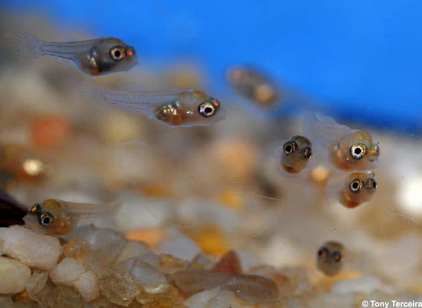
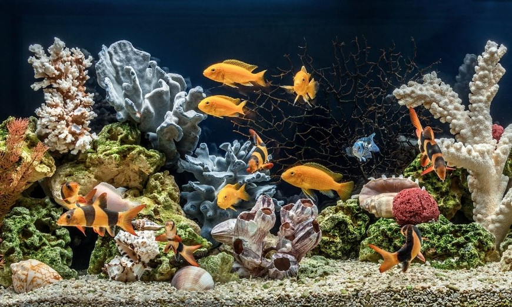

الأسماك
نبذة تعريفية: الأسماك من أكثر الحيوانات الأليفة انتشارًا، وتأتي بأنواع وألوان مختلفة تضيف جمالًا إلى المنازل.
سلوكيات: تتحرك بهدوء في الماء، وبعضها اجتماعي يحب السباحة في مجموعات.
احتياجات: تحتاج إلى حوض نظيف به ماء مناسب، ودرجة حرارة ملائمة لكل نوع، وطعام متوازن مثل الحبيبات أو الأطعمة الطازجة.
طريقة العناية: يجب تغيير جزء من ماء الحوض بانتظام، تنظيف الزجاج والفلتر، ومراقبة صحة الأسماك.
التطعيمات:
- معالجة وقائية ضد الطفيليات: عند إدخال أسماك جديدة إلى الحوض.
- فحوصات دورية للمياه: لضمان عدم وجود مواد ضارة تؤثر على صحة الأسماك.
معلومات شيقة: بعض الأسماك يمكنها التعرف على مربيها، كما أن بعض الأنواع تعيش لعشرات السنين إذا تم العناية بها جيدًا.

